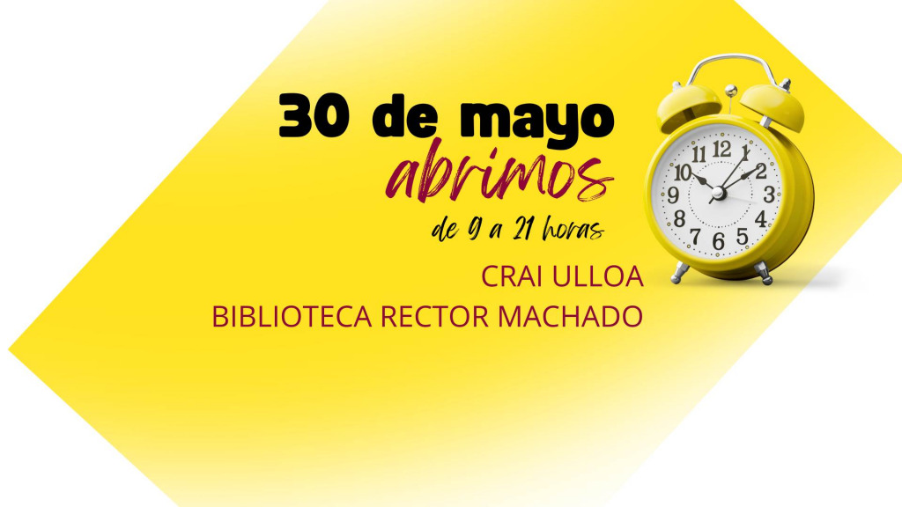
La Biblioteca colabora en la promoción del equilibrio físico y
mental de la comunidad universitaria
Te ofrecemos recursos y actividades de apoyo.
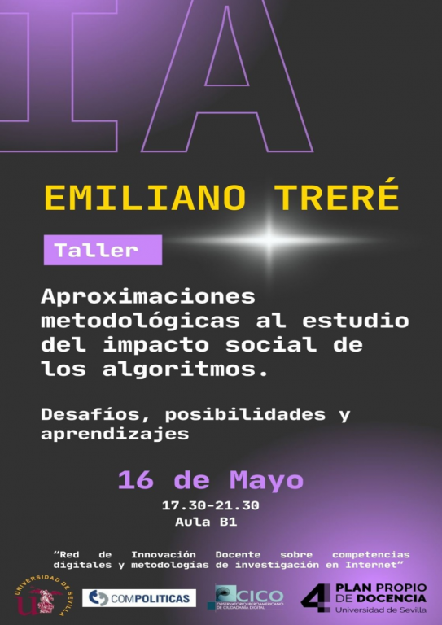
El próximo jueves 16 de mayo se celebrará a las 17.30 un taller
impartido por Emiliano Treré
En la fcom, en el aula B1.
Servicio de Chat en la Biblioteca de Comunicación
¿Necesitas ayuda? Consúltanos
La Biblioteca de Comunicación presenta un tutorial para facilitar
el uso PressReader
Descubre el mundo de la información digital.
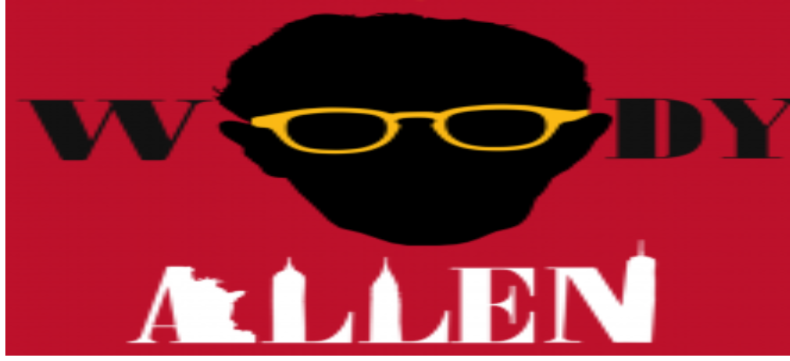
Explorando el universo creativo de Woody Allen
Sumérgete en el arte de uno de
los cineastas más influyentes de nuestro tiempo en la Biblioteca de
Comunicación, del 3 al 31 de mayo de 2024.
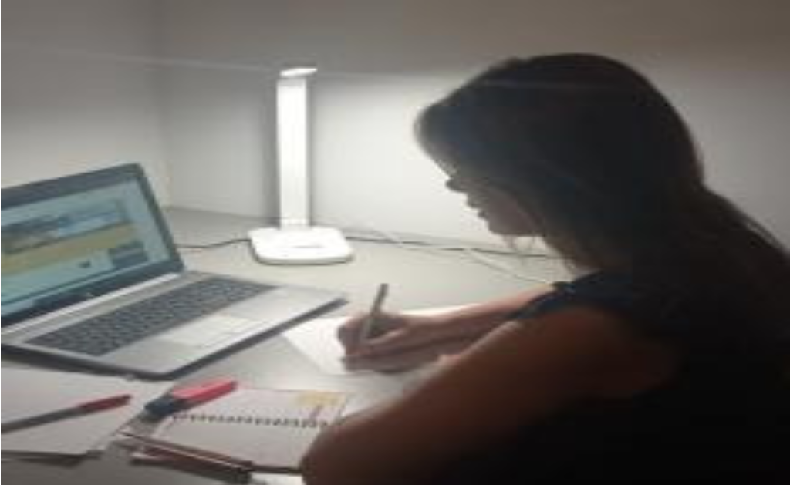
Nuevos espacios de estudio y trabajo en grupo
Videoteca de la Biblioteca de Comunicación
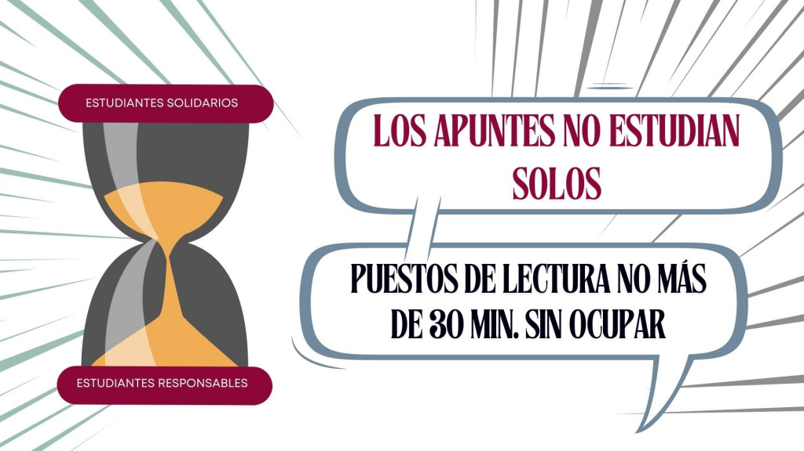
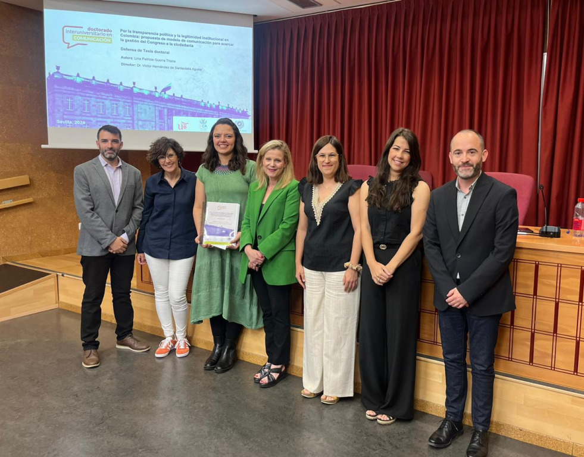
Lina Patricia Guerra Triana ha defendido su tesis doctoral
La Facultad de Comunicación celebra la segunda edición de los
premios Todo por contar
Los mejores
trabajos de redacción periodística serán galardonados en un acto que se
celebrará el próximo martes, 14 de mayo, a las 12 horas,
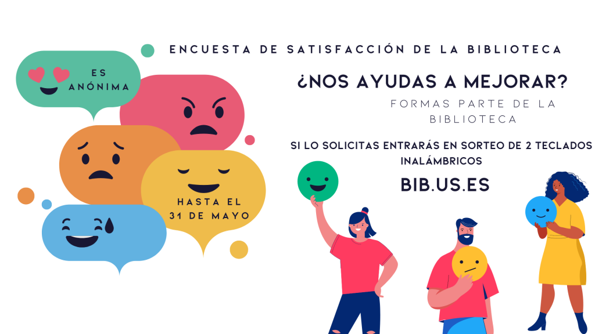
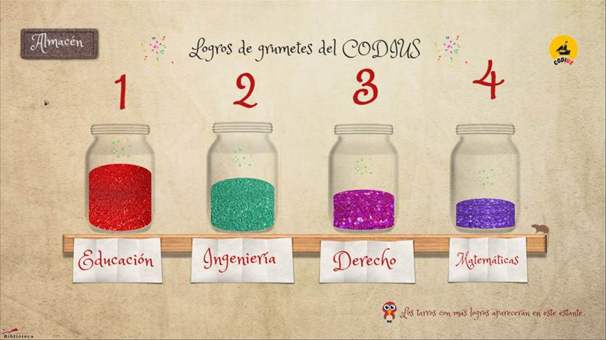
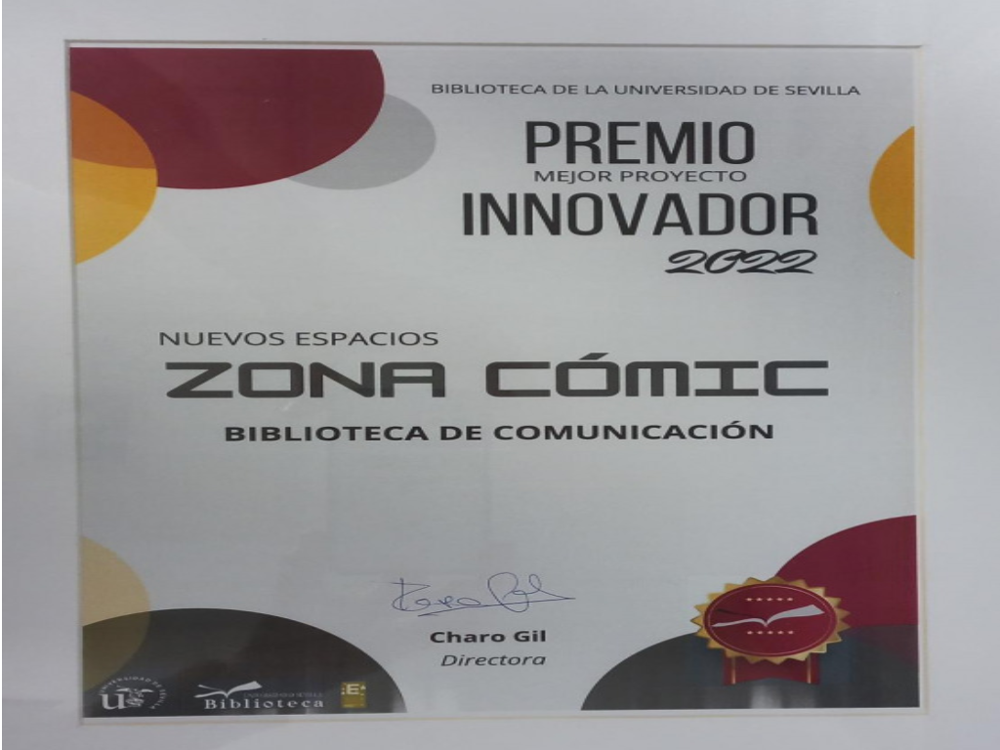
Zona Cómic, Premio Mejor Proyecto Innovador 2022
Nuevos espacios
Periodistas, egresados de la Fcom, animan y aconsejan a estudiantes
del último curso del Grado en Periodismo
Mesa redonda "Hay vida después de la Fcom"
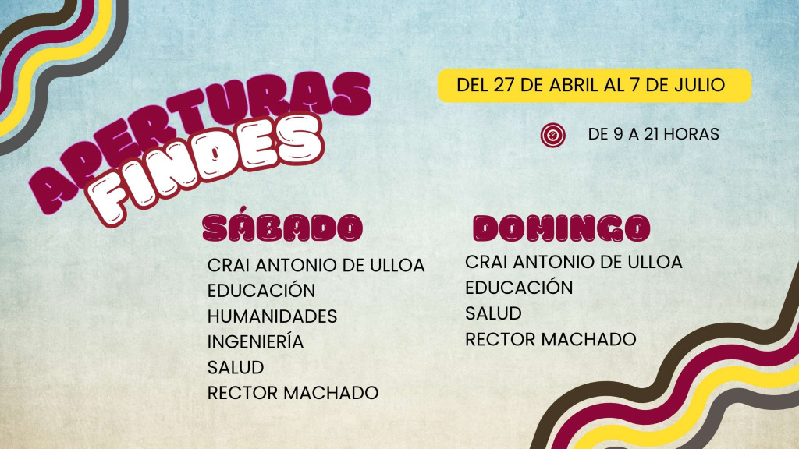
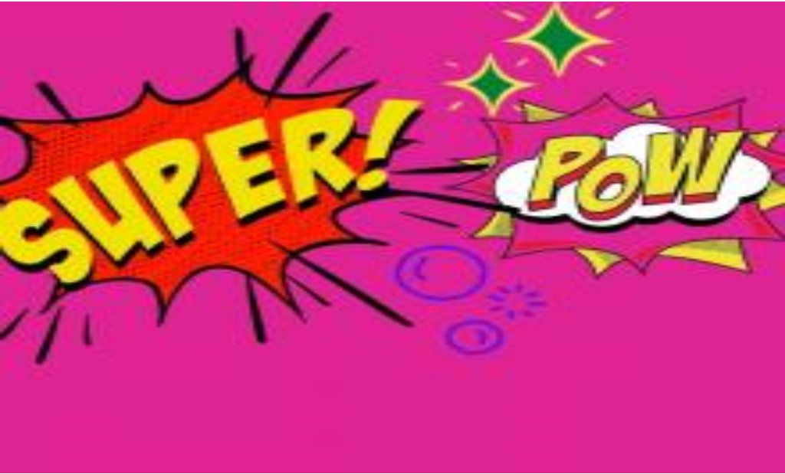
Ampliación de la Zona Cómic en la Biblioteca de Comunicación
Explora el Universo del Cómic.
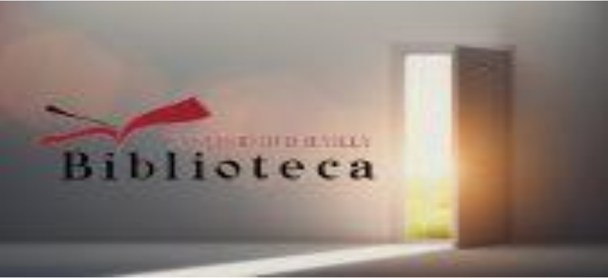
La Biblioteca adapta tres procedimientos para la Sede de
administración electrónica
Desde mayo están disponibles en sede.us.es.